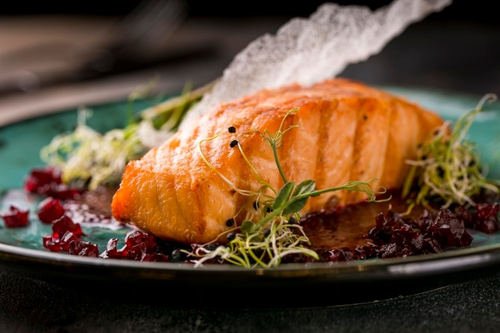

Recetas para el Invierno
Ingredientes para casuela para 4 personas
- 800g de carne de ternera
- 1 cebolla
- 2 dientes de ajo
- 2 zanahorias
- 3 patatas
- 200g de tomate triturado
- 200ml de vino tinto
- 200ml de caldo
- 1 cucharadita de tomillo
- sal y pimienta
- aceite de oliva
Ingredientes para 24 medialunas o cruasanes
- 550 g de harina de trigo común
- 140 g de azúcar
- 130 g de mantequilla (manteca)
- 1 huevo
- 100 ml de agua templada
- 100 ml de leche templada
- 25 g de levadura fresca o 10 g de levadura seca
- 1 cucharada de vainilla
- 5 g de sal (un pellizco)
- 1 huevo para pintar
- Azúcar glass
Newsletter
En esta sección encontrarás todas las recetas que iremos compartiendo, aprenderás muchas técnicas y formas de cocción.